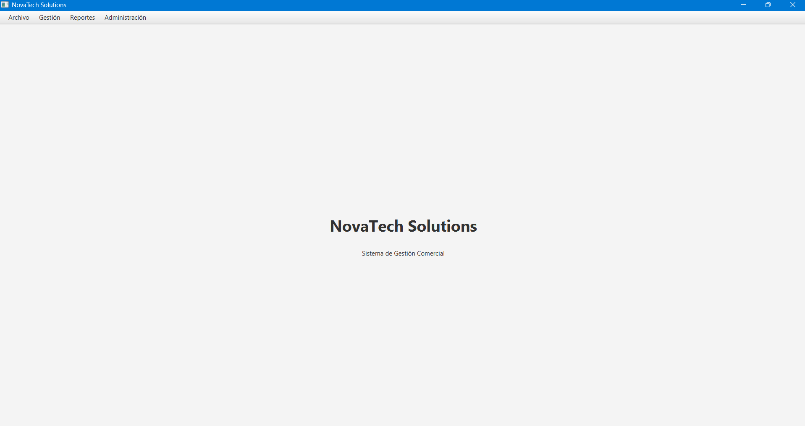

Hola 👋
Desarrollador Junior apasionado por el desarrollo de software y el análisis de datos. Actualmente continúo fortaleciendo mis conocimientos mediante proyectos personales utilizando Java, MySQL, Python y Power BI, con el objetivo de obtener mi primera experiencia profesional.
Soy Técnico Universitario en Programación graduado en la Universidad Tecnológica Nacional (UTN).
Durante mi formación desarrollé conocimientos en Java, MySQL, Python, Power BI, Git y desarrollo de aplicaciones.
Actualmente continúo aprendiendo mediante proyectos personales para fortalecer mis habilidades y adquirir experiencia práctica.
Mi principal objetivo es obtener mi primera experiencia profesional como Desarrollador Junior o Analista de Datos, donde pueda seguir creciendo y aportar valor al equipo.
Buenos Aires, Argentina
UTN - Técnico Universitario en Programación
Primer empleo IT
Aplicaciones de escritorio con JavaFX.
Modelado relacional, consultas SQL y procedimientos.
Generación de datos, automatización y análisis.
Dashboards interactivos y análisis de KPIs.
Control de versiones y trabajo con ramas.
Repositorios, documentación y portfolio.

Sistema integral de gestión comercial desarrollado como proyecto principal de portfolio.
Incluye módulos de clientes, productos, empleados, ventas, reportes, autenticación, auditoría, exportación a Excel y PDF, generación de datos mediante Python y dashboards en Power BI.
Desarrollo de una API con Spring Boot.
Scripts de automatización utilizando Python.
Nuevos dashboards y análisis de datos.
Formación en desarrollo de software, bases de datos, programación orientada a objetos, análisis de sistemas y desarrollo de aplicaciones.
Desarrollo de proyectos personales para fortalecer conocimientos en Java, MySQL, Python, Power BI y Git.
Proyecto Principal
Tecnologías
Compromiso con el aprendizaje
Todos mis proyectos están disponibles públicamente en GitHub, donde comparto código, documentación y avances de aprendizaje.
Visitar GitHub